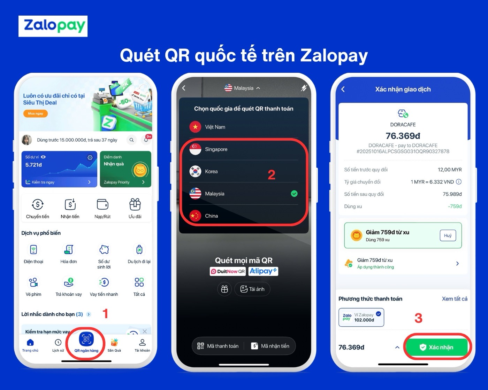
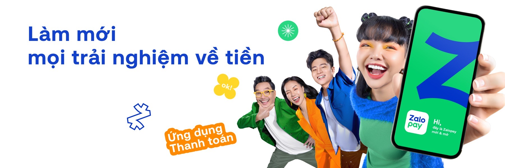
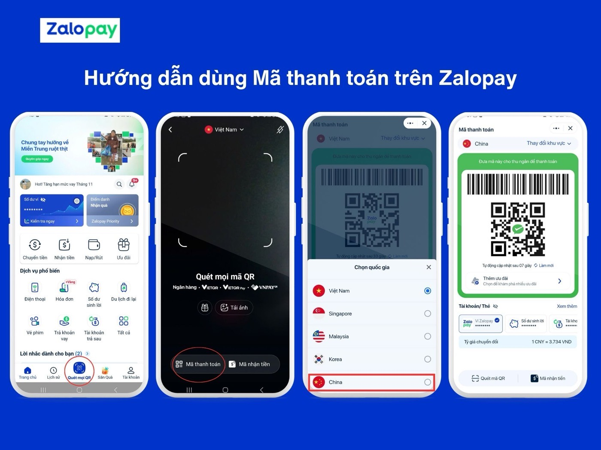
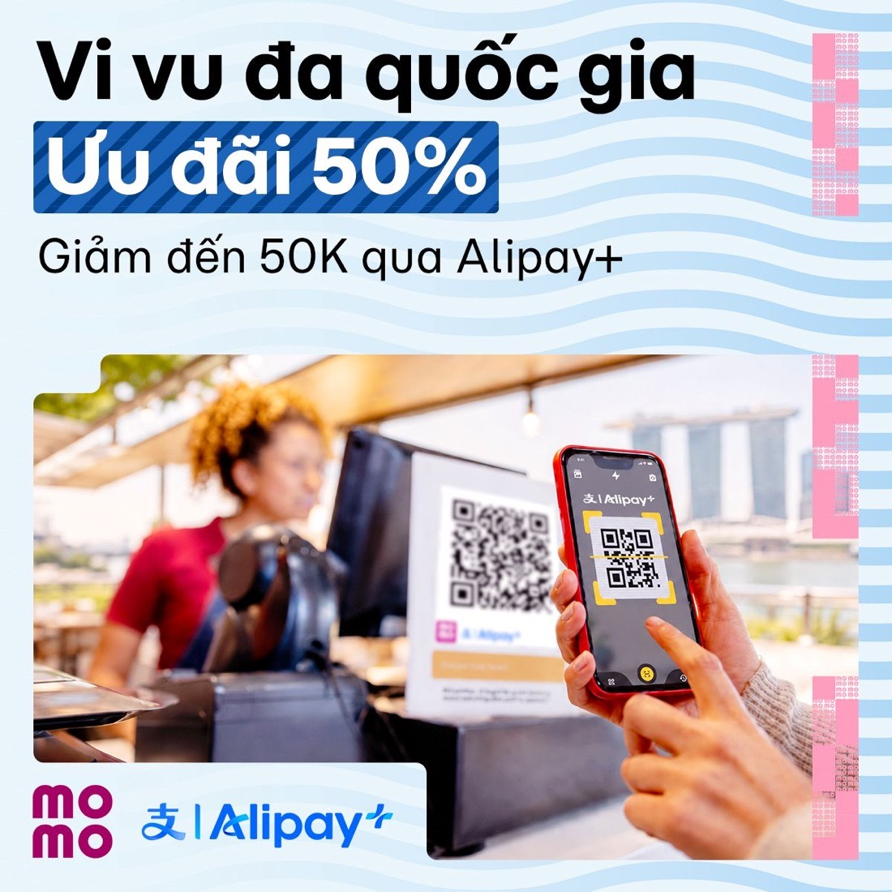

I paid my way across China with ZaloPay. It worked — malls, taxis, street stalls, everywhere I pointed my phone.
Then I flew home, opened my usual app out of habit, and never opened ZaloPay again.
That is not a product failure. The product is good. It's a growth problem hiding inside the smartest move in Vietnamese fintech — and it has a number attached to it.

merchant discount rate on the network a trip runs through, shared with the wallet — against ~0 on a domestic transfer18,19
capped incentive to win that traveller — paid once, while the trip repeats every year11,12
until they fly again — how long the app has to survive on a home screen it gave no reason to occupy
Independent portfolio analysis on public sources, all cited on the last slide. Not commissioned by ZaloPay. Product and brand imagery is ZaloPay's own, published on zalopay.vn. Where the companies publish nothing — activation rates, retention, campaign cost — I build a labelled model instead of inventing a figure.
Before the criticism, the case for the move. Vietnam's wallet market is contracting — active wallets fell from 36.2M (end-2023) to 30.3M (Sep 2025) while payment volume boomed, because bank apps and VietQR made basic payments free.2,3 Chasing new users in that market is the most expensive thing you can do. Chasing a new occasion for users you already have is not — and outbound travel is a big one: 4.06M Vietnamese trips abroad in H1 2025, up 54%, at roughly $1,000–1,500 spent per trip.1,10
The Khoai Lang Thang films sold it "từ trung tâm thương mại đến gánh hàng rong" — malls to street carts. Leading with the street cart kills the obvious objection that it only works at big chains.13
He is not Vietnam's biggest creator, but his decade of street-food and local-market work is the payment moment, and he was named Content Creator of the Year at Vietnam iContent 2025. Paying abroad is a fear purchase; belief converts it, media weight doesn't.14
Code KHOAIZLP: 50% back, capped at 50,000đ, minimum 10,000đ, first-time international QR users only. That is an activation gate, not a discount. Indonesia's lesson holds: 71% of e-wallet users there arrived for promos, only 23% stayed for them.11,15


Nothing above is wrong. All of it optimises the first scan — and the first scan is not the problem.
Credit first: ZaloPay went cross-border in late 2024, and as late as September 2025 no comparable MoMo or VNPay offering existed.17 That was a real first-mover window. It closed in April 2026 — and it closed badly, because the follower arrived with the same rail, the same cap, and a much longer offer, down to the same Vietnamese word for wandering, "vi vu".

| ZaloPay | MoMo | Read | |
|---|---|---|---|
| Launched | Late 2024 — first Vietnamese wallet out17 | Live by April 202612 | ZaloPay led by ~18 months |
| Rail | Alipay+ · DuitNow QR4 | Alipay+12 | Identical infrastructure |
| Markets | SG · KR · MY · CN (+JP reported)4,5 | CN · KR · SG · JP · TH12 | MoMo lists more |
| First-scan offer | 50% back, cap 50,000đ11 | 25% then 50% back, cap 50,000đ12 | Same cap, same gate |
| Offer window | Expired 30 Apr 2026 — a holiday burst | 16 Apr → 31 May, then 1 Jun → 31 Dec 2026 — always-on12 | MoMo owns the habit window |
| Campaign shape | One ambassador, one destination, one PR wave | No celebrity, permanent landing page, continuous promo | Moment vs system |
| And the banks | NAPAS has bilateral QR live with Thailand, Cambodia, Laos, China and Korea; VietQRGlobal launched 20256 | Erodes from below too | |
ZaloPay won the news cycle. MoMo is winning the eight months after it.
Which reframes everything: if the capability is rented, the countries overlap, and the rival's offer runs longer, then the trip cannot be a moat. So the honest question is not "how do we win travellers?" It is: what is a trip actually worth to us?
"Free for the user" is not the same as "no revenue", and this is where I had to correct my own first draft. The traveller pays no fee — but on the Alipay network the merchant pays a discount rate of 1.6–2.2% depending on volume, and that fee is split between the players, with the issuing wallet taking a share the documentation calls an inter-partner fee.18 Set that against the domestic market Vietnam built, where transfers and QR are free and a wallet earns essentially nothing on the payment itself.3,19
~$1,000–1,500 spent per trip10 ≈ 26–39M VND. If a third to half of that goes through the wallet, that is roughly 9–18M VND of billable volume sitting inside a 1.6–2.2% merchant fee pool.
The wallet's cut of that pool is not disclosed. At an assumed 20–50% share, revenue lands somewhere around 30,000–200,000đ per trip — against a one-time 50,000đ incentive that is never paid again.
10–20 payments a month — and a take rate near zero. The zero-fee wave and NAPAS fee cuts turned domestic payment into infrastructure nobody charges for.3,19
Domestic volume only becomes revenue indirectly, by cross-selling credit, savings or insurance on top of it. The payment is the hook, never the product.
So the correction matters: a trip is not a cheap acquisition event. It may be the best-margin retail payment ZaloPay has — which is exactly why losing the traveller is expensive.
Assumption ranges are mine, built on the cited MDR bands and spend-per-trip survey; neither wallet discloses its share of the fee pool, its FX spread, or wallet-share of trip spend. Treat the per-trip figure as an order of magnitude whose sign is the point, not its precision.
Rebuilt on the corrected economics. The incentive is paid once; the occasion repeats every year. So the question is not whether the promo pays back — at 30,000–200,000đ of revenue per trip against a 50,000đ one-time cap, plausibly it does. The question is how many future trips walk out of the door with the uninstall.
One-time cost: 50,000đ incentive cap, paid on the first foreign scan only.11,12 Revenue per trip: the modelled 30,000–200,000đ band from slide 03. Creator, media and PR cost sit on top and are undisclosed.
| Trips won | At 30,000đ/trip | At 200,000đ/trip |
|---|---|---|
| 1 — then deletes (me) | −20,000đ | +150,000đ |
| 2 | +10,000đ | +350,000đ |
| 3 | +40,000đ | +550,000đ |
| 5 | +100,000đ | +950,000đ |
Every row after the first is pure margin — no new incentive, no new campaign, the rail already integrated. Which is the whole argument: the money in cross-border is not in the first trip you buy, it's in the trips you keep. A deleted app forfeits the entire column.
Simple arithmetic on the stated assumptions, not a disclosed P&L. It ignores discounting and any cross-sell revenue, both of which favour retention further.
Stage widths are illustrative of where the leaks sit, not published data. The last stage is drawn near published norms — finance-app D30 retention sits around 7–9%16 — and surviving to a trip 8–12 months later is a harder test than D30.
The retention that matters here is not daily habit. It is still being installed and chosen 8–12 months later, when they fly again.
That reframe is the useful part. Daily habit is expensive to build and, in Vietnam's zero-fee domestic market, barely monetisable on its own. Surviving until the next trip is a much cheaper problem — and nobody, ZaloPay or MoMo, is currently working on it.
Four reasons, and none of them is "the app was bad". Each one is a design decision that could be made differently.
Every reason to open the app was on the other side of a border. Land at Tan Son Nhat and the trigger evaporates — nothing about the product follows you home.
No bill on autopay, no balance left, no saved habit, no reason to be the default. The trip account is a single-purpose account that finished its purpose.
My domestic default was another app I'd used for years. Switching cost is zero — but so is switching benefit, because ZaloPay never made a case for anything beyond the trip.
No recap, no "here's what you saved versus a card", no next step. The single highest-trust moment in the whole relationship — I just watched it work in a foreign country — passed without being used.
A traveller who just watched your app work abroad is the warmest lead you will ever have. Both wallets currently let that lead walk.
Treat landing — not the first scan — as the start of the funnel. Use the trip the traveller just finished as the proof, the leftover balance as the wedge, and one small domestic habit as the heartbeat that keeps the app alive until they fly again.
| Stage | Signal that fires it | Surface / touchpoint | The one ask | Metric |
|---|---|---|---|---|
| 01 LandingT+0, hours | Last foreign transaction, then a home-network or home-SIM reconnect | Push notification → single in-app screen | Nothing. Just look. | Open rate |
| 02 The recapT+0 to T+2 days | Trip closed and reconciled | In-app recap card, shareable | "See what you saved" — their own spend, their own rates, and the card comparison | Tap-through |
| 03 One habitT+2 to T+14 days | Leftover trip balance > 0 | Pre-filled autopay or savings sweep, attached to the recap | One switch, pre-filled. Not a menu. | 2nd-category adoption in 14 days |
| 04 Quiet monthsT+15 days to T+8 mo | The habit runs itself monthly | Autopay receipt · one seasonal travel-content touch on Zalo OA | Still nothing. Stay useful, stay quiet. | Still-installed rate |
| 05 Next tripT+8 to T+12 mo | Flight or hotel booking, eSIM purchase, FX search in-app | One-tap "turn on paying in [country]" | Switch the market on before departure | Next-trip win rate |
The recap is not a marketing claim — it is their own receipt. They already watched the product work in a foreign country, which is the highest-trust moment in the whole relationship. Today it passes unused.
Money already sitting in the wallet, already theirs, already doing nothing. Moving it into a bill or a savings pot costs the company nothing and creates a recurring reason to open the app — which is what survives the quiet months.
Every stage has exactly one ask, and two stages deliberately ask for nothing. Loops die from over-asking. Guardrails: no push without a genuine return signal, no dark patterns on the pre-fill, and the card comparison stays honest even when the card wins.
A trip is a funnel with dates on it. The install decision happens weeks before departure, the habit forms in-destination, and the business value lands after the plane home. ZaloPay's April push — and MoMo's always-on promo — both live almost entirely in phase 03.
| Phase | Traveller state | Channels & content | Creative job | Metric | Weight |
|---|---|---|---|---|---|
| 01 DreamT–8 to T–4 weeks | "Where should we go?" No dates booked. | Creator long-form · TikTok destination edits · Zalo OA hub · SEO on "chi phí du lịch [nước]" | Attach the app to the daydream: cost-per-day breakdowns where every price is paid by QR. | Assisted reach → hub visits | Earned-first |
| 02 PlanT–3 weeks to T–3 days | Booking flights, hotels, eSIM. Actively solving money logistics. | Search & app-store intent · placements at flight/hotel/eSIM checkout · Zalo OA reminder · airport-route OOH | Be the answer to "how do I pay there?" — a 20-second setup checklist, not a brand film. | Pre-trip activation rate | Heavy |
| 03 In-destinationTrip days 1–7 | At a counter, choosing cash, card or app. High anxiety, low patience. | Geo-triggered in-app card on arrival · creator street-level demos · merchant signage via the rail partner | Make the first scan happen in the first 24 hours. Nothing else matters this week. | First scan within 24h | Heavy |
| 04 ReturnT+0 to T+30 days | Home, unpacking, back to normal spending — and back to the old default app. | Trip recap on landing · one pre-filled domestic habit · UGC prompt built from real savings · lifecycle sequence | Convert the trip into a domestic habit. This is the phase that decides whether the other three paid for themselves. | D30 domestic active rate | Where I'd move budget |
Travel has a calendar: Tết, 30/4, summer, year-end. A burst wins one holiday. MoMo already figured this out — their offer runs to 31 December 2026.12
One anchor creator of Khoai's calibre for trust, then destination-specialist micro-creators per market — and hold some of that budget for phase 04, where nobody is spending.
Reach and PR pickup are what a burst produces. If phase 04 has no metric on the dashboard, the organisation will keep buying phase 03 forever.
Trips per traveller retained
Not installs, not scans, not campaign reach. The number that tracks the margin: of travellers who paid abroad once, how many pay abroad again on their next trip. Measurable per destination and per acquisition cohort, and it rises only if the app survived the year in between.
Incentive cost per repeat traveller
Cost per first scan always looks cheap at a 50,000đ cap. Divide the same spend by travellers who came back for trip two and the real price appears — which is the only column in slide 04's table that turns positive.
Uninstall rate in the 30 days after a trip ends
The return leg is where the asset is lost, and it is visible long before the next travel season proves it.
Two wallets on one rail with identical caps ends in bigger caps. Mitigation: compete on the return leg instead — it's the half MoMo's always-on promo doesn't touch, and it compounds instead of resetting each holiday.
Holiday spikes will look like traction and hide a flat D30. Mitigation: judge every push on same-season comparisons and on the north star, never on peak-week transaction counts.
Detecting a return and messaging about spending is a trust boundary. Mitigation: return signal opt-in, one message not a sequence, and content that is genuinely useful to the user — their money, their numbers, an easy off switch.
The trip is the wedge. Home is the business.
Compiled July 2026 from official data (SBV, national tourism statistics, NAPAS), company material (zalopay.vn, momo.vn, Ant International, VNG financials) and named press. Company self-reported figures are labelled. Two numbers in this deck are mine, not theirs: the 1–2 vs 120–240 occasion ratio and the break-even table, both built from the inputs cited below with assumptions stated on the slide. The opening story is my own trip.
Correction log, kept deliberately: an earlier version of this deck asserted that ZaloPay "earns close to nothing" on a cross-border payment because the route is fee-free to the user. That conflated a zero user fee with zero revenue and it was wrong — the merchant-side discount rate is shared with the issuing wallet. Slides 03, 04, 06 and 08 were rebuilt on the corrected economics, which strengthened the conclusion rather than weakening it.